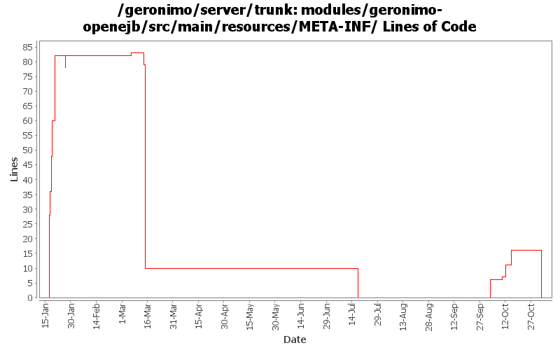

[root]/modules/geronimo-openejb/src/main/resources/META-INF
 org.apache.openejb.client.IdentityResolver
(0 files, 0 lines)
org.apache.openejb.client.IdentityResolver
(0 files, 0 lines)

| Author | Changes | Lines of Code | Lines per Change |
|---|---|---|---|
| Totals | 17 (100.0%) | 119 (100.0%) | 7.0 |
| dain | 6 (35.3%) | 86 (72.3%) | 14.3 |
| gawor | 2 (11.8%) | 15 (12.6%) | 7.5 |
| djencks | 3 (17.6%) | 11 (9.2%) | 3.6 |
| dims | 2 (11.8%) | 4 (3.4%) | 2.0 |
| hogstrom | 1 (5.9%) | 2 (1.7%) | 2.0 |
| vamsic007 | 1 (5.9%) | 1 (0.8%) | 1.0 |
| prasad | 1 (5.9%) | 0 (0.0%) | 0.0 |
| dwoods | 1 (5.9%) | 0 (0.0%) | 0.0 |
GERONIMO-3565. Modules distributed amongst framework/modules and plugins
0 lines of code changed in 1 file:
can't quite eliminate geronimo-openejb geronimo-dependency.xmlfile. adding explicit versions for now. right version of swizzle-stream is getting installed now.
11 lines of code changed in 1 file:
openejb now needs commons-dbcp dependency (GERONIMO-3531)
4 lines of code changed in 1 file:
svn props
1 lines of code changed in 1 file:
GERONIMO-3496 assemble servers out of plugins
6 lines of code changed in 1 file:
GERONIMO-3331 Updates to handle recent OpenEJB changes
0 lines of code changed in 1 file:
GERONIMO-2937 Move some dependencies out of geronimo-dependencies.xml and put the ones still required in the config plan. Also exclude stax-api from openejb.
0 lines of code changed in 1 file:
Updating from stax-api to geronimo-stax-api_1.0_spec to correct incorrect method signatures
2 lines of code changed in 1 file:
GERONIMO-2937, GERONIMO-2934 Fix LinkageError problem running app client builder
5 lines of code changed in 1 file:
add swizzle dependency
4 lines of code changed in 1 file:
Prevent the following failure:
[INFO] ------------------------------------------------------------------------
[ERROR] BUILD ERROR
[INFO] ------------------------------------------------------------------------
[INFO] Unable to create configuration for deployment
Unable to resolve dependency org.apache.openejb/openejb-persistence//jar
0 lines of code changed in 1 file:
Switch all of Geronimo to use the EJB 3.0 specification apis.
Add application server instance to openejbsystem service.
Add dependency on openjpa to openejb module.
22 lines of code changed in 1 file:
Fix some more ejb deployment issues
4 lines of code changed in 1 file:
Stubbed out ejb daemon gbean
8 lines of code changed in 1 file:
Ejb deployment now work, but executing the beans has not been tested
16 lines of code changed in 1 file:
Added deps on xerces and oro for castor
8 lines of code changed in 1 file:
Initial openejb3 integration
28 lines of code changed in 1 file: